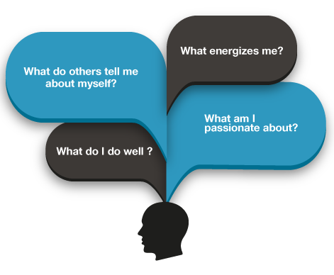

Building Self-Awareness through Self-Reflection
Making plans for your future can be difficult. Starting with the self-assessment process can give you more choices and increase your confidence that you are on the right career path. A self-assessment can reveal your personal attributes, values, skills, and interests, all of which are critical in helping you make informed career choices that are appropriate for you. Self-reflection is a good starting part for getting to know yourself better.
Self-Reflective Questions to Ask Yourself
Start by examining your interests, strengths, and traits. Ask yourself:
- What do I do well?
- What do I enjoy doing?
- What do others tell me about myself?
- What energizes me?
- What am I passionate about?
Answers to these questions will help you identify your strengths and make decisions around the contributions you can make. Many people try to conform to jobs advertised in newspapers or other sources. However, employers today have many qualified candidates from whom to choose. You will be seriously considered for a position only if you demonstrate that you know who you are, what you can offer, and where you are going.
Complete Part I of Your Self-Assessment
Download and complete the first section of your Self-Assessment and Reflection Summary . Respond to the self-reflection questions and share three success stories from your past.
These are experiences that you are proud of and that make you feel energized as you recall them. Examining your past experiences is a great way of uncovering your skills, interests, personal characteristics and values.
Click each mentor below to reveal their success stories.
" When I was 13 my soccer team won the provincial championship. We played sudden death games against 11 other teams and came out on top. We even got to travel to Toronto to play in the championship game at BMO Field! I loved feeling like a sports star. When we won, the entire team got to lift up a huge trophy together. I loved being a part of such a great team!"
"I was volunteering with a local community group that was using paper to track people who had donated money to the group. I was able to point out that this could be done electronically, using simple database technology. I created a basic model and presented it to the group’s organizer, who loved it and decided to give me a paid position developing the system."
References:
University of Waterloo (2004). Career Development eManual: Self-Assessment. Retrieved December 23, 2015 from https://emanual.uwaterloo.ca/a/resources/self_assessment.aspx.